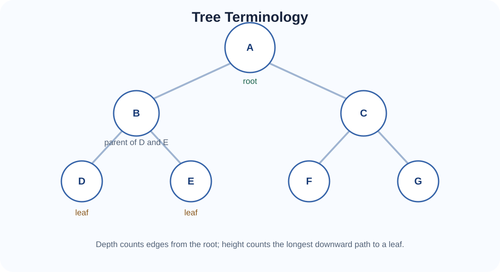
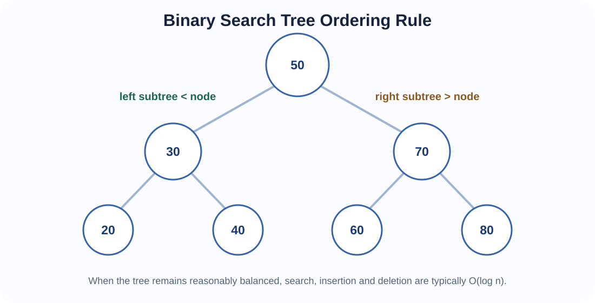
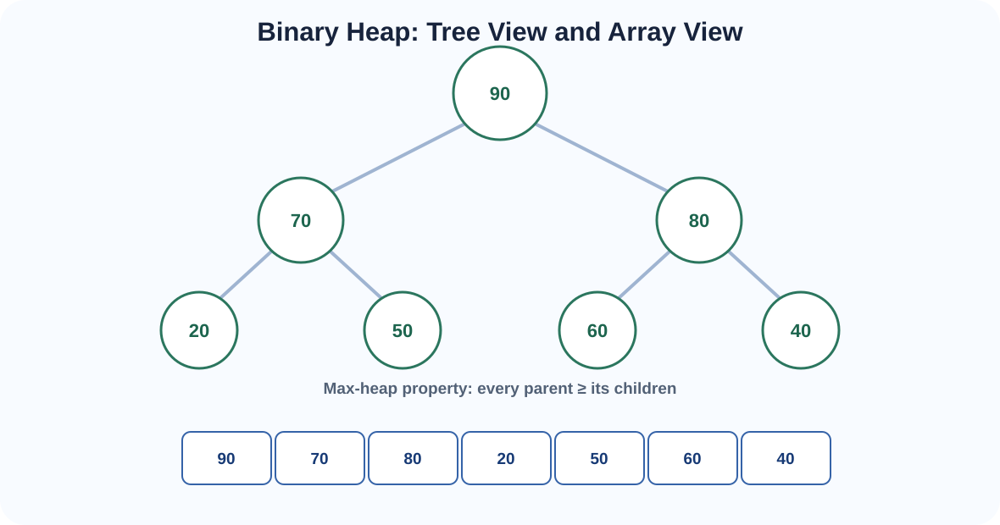
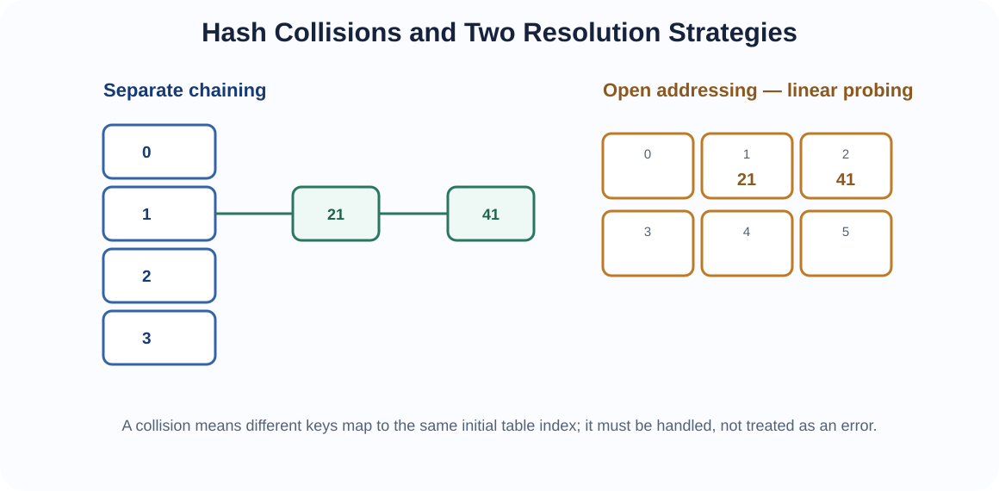
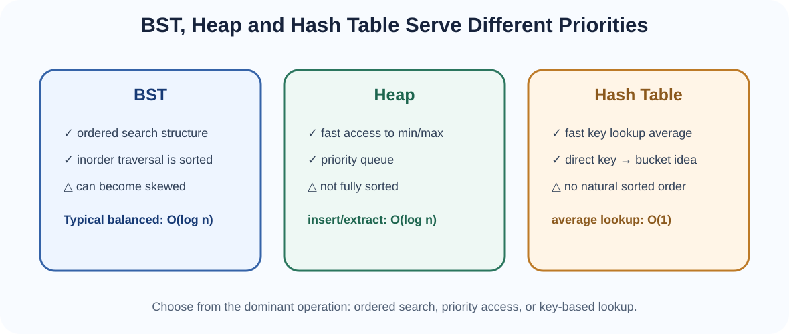

Non-linear and key-based data structures that organise data for ordered search, priority access and fast lookup.
In an array or linked list, values form a sequence. Many real problems are not naturally sequential. File systems, organisational structures, expression syntax and classification systems are hierarchical. Priority-based systems need the most important item quickly. Key-value systems need rapid lookup without scanning every record.
This topic introduces three families of structures designed around these needs:
A tree is a hierarchical structure made of nodes connected by edges. Unlike a general graph, a rooted tree has one distinguished root and every non-root node has exactly one parent.

A binary tree is a tree in which each node has at most two children, normally called left and right.
Binary trees are important because many algorithms can make a decision at each node and continue into one of two subproblems. They also form the basis of binary search trees and binary heaps.
These descriptions are not interchangeable. A heap specifically requires the complete shape property, while BST efficiency depends strongly on keeping height small.
A traversal defines the order in which tree nodes are visited. Four common traversals are essential.
ALGORITHM Preorder(node)
IF node = null
RETURN
process node
Preorder(node.left)
Preorder(node.right)ALGORITHM Inorder(node)
IF node = null
RETURN
Inorder(node.left)
process node
Inorder(node.right)ALGORITHM Postorder(node)
IF node = null
RETURN
Postorder(node.left)
Postorder(node.right)
process nodeLevel-order traversal visits nodes breadth-first and therefore uses a Queue ADT.
ALGORITHM LevelOrder(root)
IF root = null
RETURN
create empty queue Q
Q.enqueue(root)
WHILE Q is not empty
current ← Q.dequeue()
process current
IF current.left ≠ null
Q.enqueue(current.left)
IF current.right ≠ null
Q.enqueue(current.right)A Binary Search Tree is a binary tree with an ordering rule. For each node:

Duplicate-key handling must be defined by the implementation. A system may reject duplicates, store counts, or use a consistent side rule.
A BST combines tree hierarchy with ordered search. At each node, one comparison determines which subtree can still contain the target. When the tree is balanced, this produces search behaviour similar to binary search: O(log n).
ALGORITHM BSTSearch(root, target)
current ← root
WHILE current ≠ null
IF target = current.key
RETURN current
IF target < current.key
current ← current.left
ELSE
current ← current.right
RETURN NOT_FOUNDALGORITHM BSTSearchRecursive(node, target)
IF node = null
RETURN NOT_FOUND
IF target = node.key
RETURN node
IF target < node.key
RETURN BSTSearchRecursive(node.left, target)
RETURN BSTSearchRecursive(node.right, target)The cost depends on tree height h: O(h). A balanced BST has h ≈ log n, while a highly skewed BST can have h ≈ n.
Insertion follows the same comparisons as search until a null child position is found.
ALGORITHM BSTInsert(root, key)
newNode ← Node(key)
IF root = null
RETURN newNode
parent ← null
current ← root
WHILE current ≠ null
parent ← current
IF key < current.key
current ← current.left
ELSE IF key > current.key
current ← current.right
ELSE
RETURN root // duplicate policy: reject
IF key < parent.key
parent.left ← newNode
ELSE
parent.right ← newNode
RETURN rootInsertion is O(h): O(log n) in a balanced tree and O(n) in the worst skewed case.
Deletion must remove a key while preserving the BST ordering rule. There are three cases.
A leaf can simply be disconnected from its parent.
The node is bypassed by connecting its parent directly to its only child.
The node cannot simply disappear because it separates two ordered subtrees. A common solution is to replace its key with its inorder successor—the smallest key in the right subtree—then delete that successor from its original location.
ALGORITHM BSTMinimum(node)
current ← node
WHILE current.left ≠ null
current ← current.left
RETURN currentALGORITHM BSTDelete(node, key)
IF node = null
RETURN null
IF key < node.key
node.left ← BSTDelete(node.left, key)
ELSE IF key > node.key
node.right ← BSTDelete(node.right, key)
ELSE
// key found
IF node.left = null
RETURN node.right
IF node.right = null
RETURN node.left
successor ← BSTMinimum(node.right)
node.key ← successor.key
node.right ← BSTDelete(node.right, successor.key)
RETURN nodeDeletion remains O(h).
Insertion order strongly affects an ordinary BST. Inserting:
10, 20, 30, 40, 50creates a right-skewed structure with height n − 1. Search then degrades toward O(n), similar to a linked list.
Self-balancing trees such as AVL and Red-Black trees address this by restructuring the tree after updates. Their balancing algorithms are beyond the core scope here, but the reason they exist should be clear: they preserve logarithmic height.
Inorder traversal of a BST produces keys in sorted order.
BST: 50, 30, 70, 20, 40, 60, 80
Inorder output:
20, 30, 40, 50, 60, 70, 80A binary heap is a complete binary tree that also satisfies a heap-order property.

A heap guarantees only parent-child priority relationships. It does not guarantee that all values in the left subtree are smaller than the node or that inorder traversal is sorted. A heap is therefore excellent for accessing the highest or lowest priority item, but poor for arbitrary ordered search.
Because a heap is complete, it can be stored compactly in an array without explicit child references. For zero-based indexing:
parent(i) = floor((i - 1) / 2)
left(i) = 2i + 1
right(i) = 2i + 2This is an important example of a tree represented efficiently using an array.
Insertion places the new value into the next available position to preserve completeness, then moves it upward until the heap-order property is restored. This is often called sift up or heapify up.
ALGORITHM MaxHeapInsert(H, value)
append value to H
i ← size(H) - 1
WHILE i > 0
p ← floor((i - 1) / 2)
IF H[p] ≥ H[i]
BREAK
SWAP H[p], H[i]
i ← pThe heap height is O(log n), so insertion is O(log n).
ALGORITHM MaxHeapPeek(H)
IF size(H) = 0
RETURN "empty"
RETURN H[0]Accessing the maximum is O(1) because it is always stored at the root.
Removing the root would leave a hole. The final array value is moved to the root, the array shrinks, then the new root moves downward until heap order is restored.
ALGORITHM ExtractMax(H)
IF size(H) = 0
RETURN UNDERFLOW
maxValue ← H[0]
H[0] ← H[size(H) - 1]
remove last element from H
MaxHeapifyDown(H, 0)
RETURN maxValueALGORITHM MaxHeapifyDown(H, i)
n ← size(H)
WHILE true
left ← 2i + 1
right ← 2i + 2
largest ← i
IF left < n AND H[left] > H[largest]
largest ← left
IF right < n AND H[right] > H[largest]
largest ← right
IF largest = i
BREAK
SWAP H[i], H[largest]
i ← largestHeapify down is O(log n).
A max-heap can be built from an unordered array by heapifying internal nodes from the bottom upward.
ALGORITHM BuildMaxHeap(H)
n ← size(H)
FOR i ← floor(n / 2) - 1 DOWNTO 0
MaxHeapifyDown(H, i)Although each individual heapify can cost O(log n), the complete bottom-up build is O(n), because most nodes are near the leaves and move only a small distance.
A priority queue is an ADT in which removal is based on priority rather than arrival time. A heap is a common implementation.
Applications include CPU scheduling, event simulation, shortest-path algorithms and task prioritisation.
Heap sort uses a max-heap to repeatedly move the largest remaining value to the end of the array.
ALGORITHM HeapSort(A)
BuildMaxHeap(A)
FOR end ← length(A) - 1 DOWNTO 1
SWAP A[0], A[end]
reduce active heap size by 1
MaxHeapifyDown(A, 0)A hash table stores key-value entries in an array-like table. A hash function transforms a key into an array index or bucket.
index ← hash(key) mod tableSizeThe goal is to distribute keys across the available buckets so lookup can jump near the desired record instead of scanning the whole collection.
ALGORITHM HashInteger(key, tableSize)
RETURN key mod tableSizeThis simple function is useful for teaching, but real hash functions are designed more carefully to distribute typical keys well.
A collision occurs when two different keys map to the same initial table index. Collisions are normal and must be resolved.

Each table index stores a bucket containing zero or more entries, often represented by a linked list or dynamic collection.
ALGORITHM HashInsertChaining(T, key, value)
index ← hash(key) mod length(T)
FOR each entry in T[index]
IF entry.key = key
entry.value ← value
RETURN
add (key, value) to T[index]ALGORITHM HashSearchChaining(T, key)
index ← hash(key) mod length(T)
FOR each entry in T[index]
IF entry.key = key
RETURN entry.value
RETURN NOT_FOUNDALGORITHM HashDeleteChaining(T, key)
index ← hash(key) mod length(T)
locate key in T[index]
IF key exists
remove its entry
RETURN true
RETURN falseOpen addressing stores all entries directly inside the table array. If the first position is occupied, the algorithm probes alternative slots.
index(i) = (hash(key) + i) mod tableSizeALGORITHM HashInsertLinear(T, key, value)
start ← hash(key) mod length(T)
FOR i ← 0 TO length(T) - 1
index ← (start + i) mod length(T)
IF T[index] is EMPTY OR T[index] is DELETED
T[index] ← (key, value)
RETURN true
IF T[index].key = key
T[index].value ← value
RETURN true
RETURN false // table fullALGORITHM HashSearchLinear(T, key)
start ← hash(key) mod length(T)
FOR i ← 0 TO length(T) - 1
index ← (start + i) mod length(T)
IF T[index] is EMPTY
RETURN NOT_FOUND
IF T[index] is not DELETED
AND T[index].key = key
RETURN T[index].value
RETURN NOT_FOUNDSimply replacing a deleted entry with EMPTY can break a probe chain and cause later searches to stop too early. A special DELETED marker—sometimes called a tombstone—preserves the search path.
ALGORITHM HashDeleteLinear(T, key)
locate key using the same probe sequence
IF found
T[index] ← DELETED
RETURN true
RETURN falseThese approaches change the probe sequence but preserve the basic idea of storing every entry directly in the table.
The load factor measures how full a hash table is:
As load factor rises, collisions and probe lengths usually increase. Hash tables therefore often resize when the load becomes too high.
When capacity grows, existing entries cannot simply remain at their old indexes because the table size participates in index calculation.
ALGORITHM Rehash(oldTable, newSize)
create empty newTable of newSize
FOR each active entry in oldTable
insert entry into newTable
using the new table size
RETURN newTableA resize is expensive, but it happens occasionally. As with dynamic arrays, amortised analysis explains why average insertion can remain efficient.
With a well-designed hash function and controlled load factor:
Worst-case behaviour can degrade to O(n) if many keys collide or probing becomes very long. Therefore O(1) is an expected/average claim, not an absolute guarantee.

| Need | BST | Heap | Hash table |
|---|---|---|---|
| Search arbitrary key | O(log n) balanced | O(n) general search | O(1) average |
| Minimum/maximum | O(log n) balanced | O(1) at root for chosen priority | No ordering advantage |
| Insert | O(log n) balanced | O(log n) | O(1) average |
| Delete arbitrary key | O(log n) balanced | O(n) to locate generally | O(1) average |
| Sorted traversal | Yes, inorder | No | No |
| Priority queue | Possible but not ideal | Excellent | Not natural |
Ask which operation dominates:
Data structure choice is a decision about the operations the application values most.
Topic 8 introduces graphs. Trees are a special case of graphs, and several earlier structures return: breadth-first graph traversal uses a queue, depth-first traversal uses a stack or recursion, and priority-based graph algorithms often use heaps.